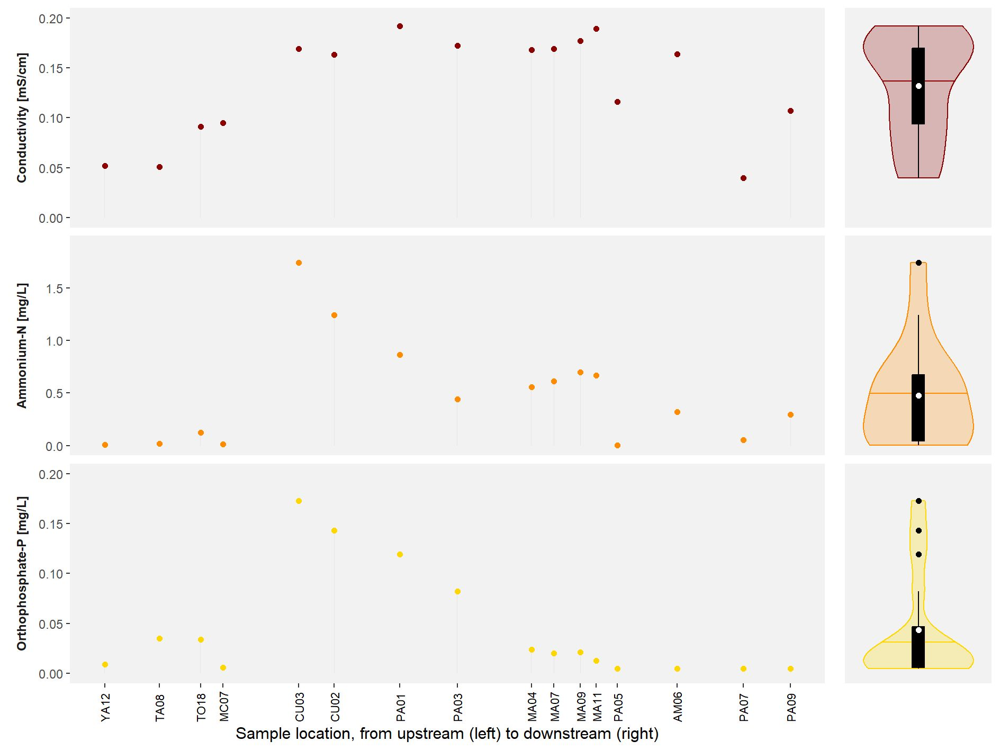

Campaign #4
May 2024
 On Monday 06 May, we headed out to the field for the first day of the fourth campaign. The experiences of
the first three campaigns came in handy to access the selected sampling sites and organise the logistics of the field visits.
The extreme drought of the previous months has had a clear impact on the water levels in the reservoirs, which still
seemed to be about 15 meters below their normal level. In the end, 53 accessible sites were selected: 32 river/stream sites
and 21 reservoir sites.
On Monday 06 May, we headed out to the field for the first day of the fourth campaign. The experiences of
the first three campaigns came in handy to access the selected sampling sites and organise the logistics of the field visits.
The extreme drought of the previous months has had a clear impact on the water levels in the reservoirs, which still
seemed to be about 15 meters below their normal level. In the end, 53 accessible sites were selected: 32 river/stream sites
and 21 reservoir sites.
Abiotic conditions
We collected information on the abiotic conditions in each of the 53 sampling sites. To get this data, we made use of a multiprobe (a device that measures several conditions at once) on-site and USEPA approved test kits to determine the nutrient concentrations off-site. The collection of this data confirmed the patterns of the first campaign and are in line with what we expected. For instance, nutrient concentrations were the lowest in the upstream locations and highest directly downstream of the city of Cuenca. Similarly, conductivity levels showed the influence of the city of Cuenca on the river water quality: the highest conductivity levels were observed directly downstream of the city.
Summary
A total of 53 sampling sites were selected and assessed for a variety of water quality parameters. The abiotic conditions showed a clear similarity with the previous campaigns, with clearly higher nutrient levels directly downstream of the city of Cuenca.
More information can be found in the short report on the fourth sampling campaign [link].
Acknowledgement
We would like to thank D.J. Vimos Lojano and K.P. Ramirez Pozo for their help in collecting the samples in the field as well as their subsequent processing in the lab. We also thank D.G. Zuñiga Villegas for providing us with the necessary transport.